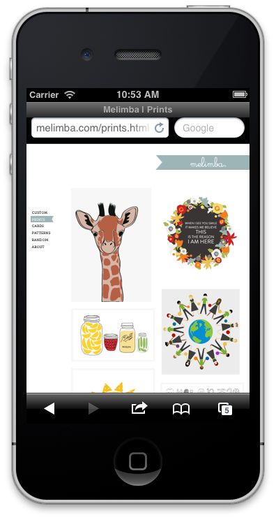
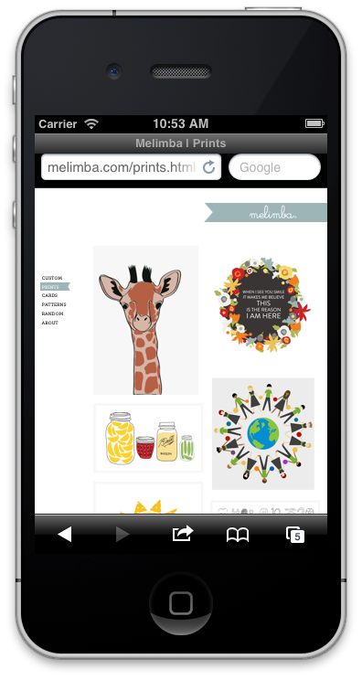
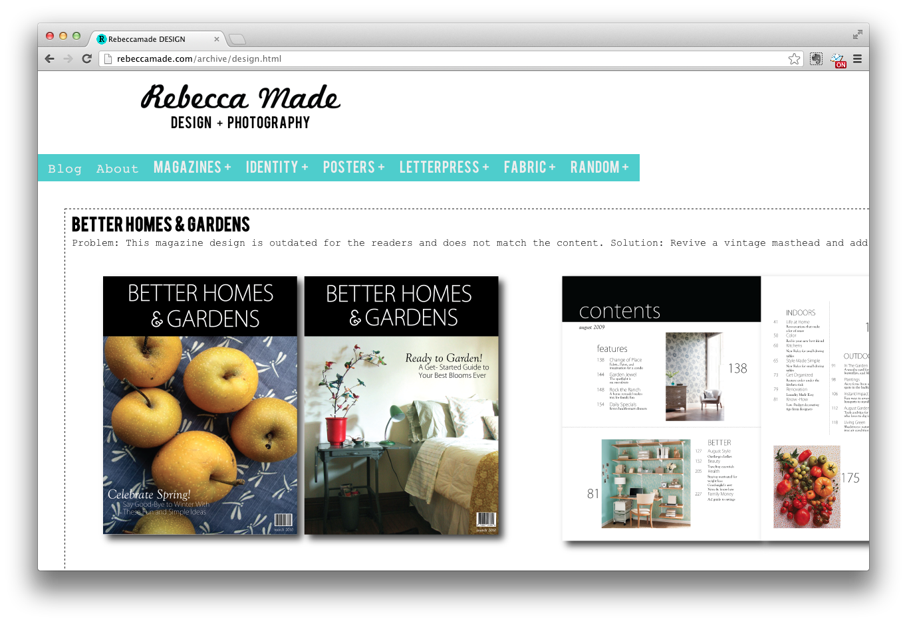

Flexjet Aircraft
The charter aircraft carrier, Flexjet, needed to update their site. Their older site was very heavy with dark colors and imagery. So my team re-created all the assets and created a transparent, light, and fresh visual experience.
Before
After
When Flexjet introduced a new plane, the designer came up with this microsite/landing page that I got the pleasure to make, complete with a pop-up slide show. Launch Site
Central Market
The Texas-based specialty grocery store, Central Market, knows how to make the holidays festive. I got to make this HTML takeover to celebrate all of the holiday options, complete with mini slideshows, tree decorating, moveable food pieces, and a mobile top 10 items to buy.
Launch Desktop Site |
Launch Mobile Site

Russell Athletic
For an advertising campaign, Russell Athletic needed a site to live within an iframe on their online shop. I worked with a PHP developer to create an interactive experience that could be experienced on both desktop and mobile platforms, and be shared on five different social networks.
Launch Site |
Launch Mobile Site
Melimba & Co.
My sister has a design company so I created a portfolio site for her that would adapt to mobile devices. Launch Site
 

Rebecca Made
My first website! As an assignment for a college course, I learned the basics of HTML and CSS to create this little number. Launch Archived Site
